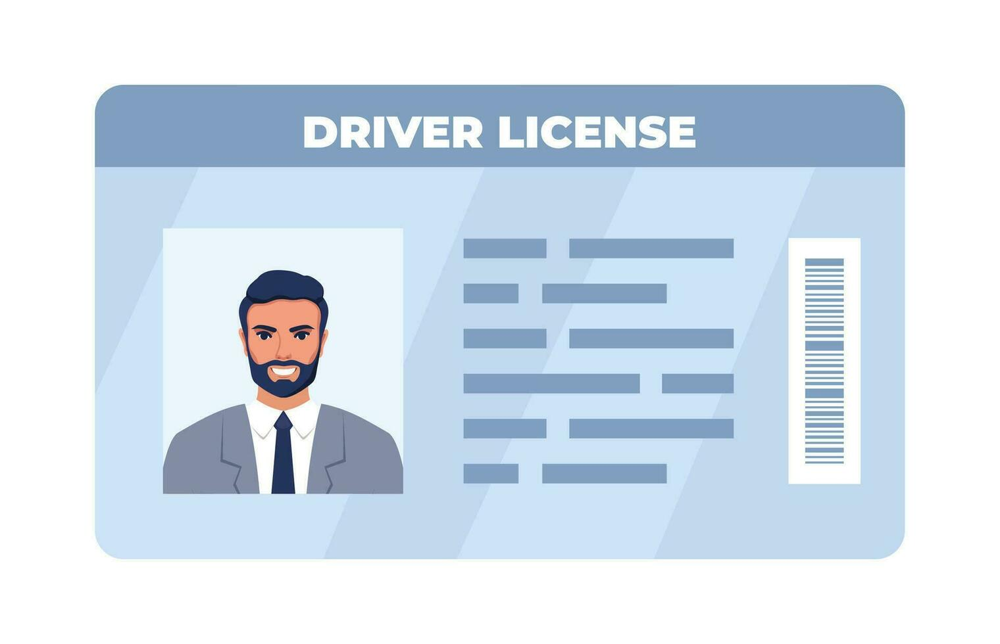

Speaker 1
Part Two, you will hear a traffic police officer talking to a group of listeners about driving licence application and traffic conditions in the UK. First, you have some time to look at questions 11 to 15?
Speaker 1
Now listen carefully and answer questions 11 to 15. Hello, I'm Edward, and I'm here to tell you about road conditions in various areas of the UK. I am also going to tell you about driver's licenses in the UK. If you have never had a driver's license, or you have one from another country, and you want to get a UK license, you must be a UK resident. You will need to show a medical report when your UK license needs to be renewed. If you are trying to translate your original foreign driving license to apply for a UK license, which is a must. If you want to be able to drive here, you will need to visit an official agency. These are scattered throughout the London area and are well equipped to assist you with any questions you might have and any services they offer are included in your license fee. If you already have a translated license, but need some personal information updating, you do not need to pay for the update, they'll do it for free. When you are getting a new driving license, you may need to have a new photo taken as some photos are rejected. It's actually okay if your photo is too small since we can get it enlarged with our printer. The majority of rejected photos are the ones that were taken with a cream backdrop instead of a monotone gray background. We've now found that photos with the latter allow us to identify the license holder much more easily. If you were wearing glasses on the previous photo, you don't need to worry about it since it is still allowed. If you are not sure whether your previous license is still valid than the license checking service is for you. The procedures are quite clear, and you just have to follow them. Ideally, I would like to see the process going faster since it can take hours to finish. From my standpoint, it will help if all the applicants bring the necessary identification with them, then all they have to do is just fill in the forms accordingly step by step. I'm often asked whether I have a personal recommendation about the fastest or cheapest place to get all this done. But I think it really depends on where you are, they can all get busy at some point. And when it is quiet at one branch, it may be busy in another. So take your pick. All I would say is that there is absolutely no difference in price. It's a standard fee. The only advice I would give is that the quickest way to complete an application is to fill out the form on the internet and then bring a print copy with you to the agency location of your choice. Before you hear the rest of the talk, you have some time to look at questions 16 to 20.
Speaker 1
Now listen carefully and answer questions 16 to 20. Next, people frequently asked me what I think of the road conditions in some of our cities. London is obviously the biggest and busiest and there are lots of parking restrictions one way systems and so on. But on the hole I find the traffic signs are very clear. In Edinburgh most people use digital maps to get to know local traffic and road conditions which can be estimated through different traffic flow lines. It is a city of lights, traffic lights, but they're extremely efficient as they're timed perfectly to get the traffic flowing smoothly. That's important because pedestrian areas and crossings are always packed with people on foot which need Strong regulation, the city of Cardiff has tackled traffic flow in a different way. It recently completed a road expansion scheme, and the extra lanes of the dual carriageway are easing congestion. It's a similar story in Manchester. Instead of going through the town center, most vehicles choose ring roads so as to avoid the downtown congestion. It can still happen though, so there's a possibility that the city will introduce checkpoints where the police can intervene to direct traffic at peak periods. And finally, they say All roads lead to Rome. And you could say that about Oxford. I like the many options for getting in and out of the city because drivers can always find alternative routes. The other cities in the UK are that is the end of part two. You now have 30 seconds to check your answers to part two.